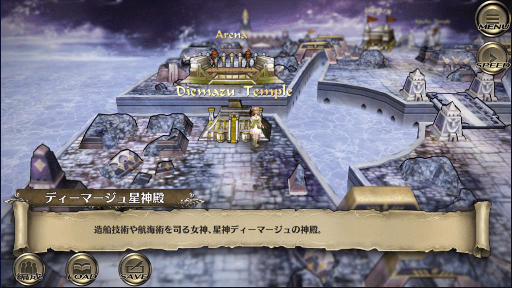
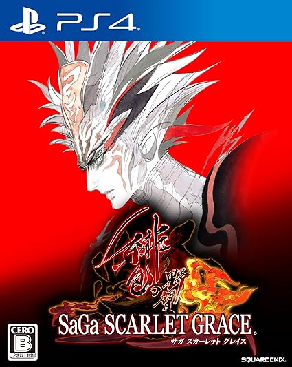

ディーマージュ神
サガスカ内でのディーマージュ神
アスワカンの神殿：

ヤクサルトの祠：

ディーマージュ神の恩寵
| 名前 | 分野 | 恩寵 | 恩寵の内容 |
|---|---|---|---|
| ディーマージュ神 | 航海 | ディーマージュの嘆き | 敵全体に大きなダメージを与え、確率で混乱させる。 敵の連撃が発生した後に発生しやすい。 |
開発関係者のツイート
河津さんのツイート
#サガスカ #サガスカーレットグレイス #緋色の野望 #どんなゲーム
— 河津秋敏 (@SaGa30kawazu) July 3, 2018
その30. 航海の星神ディーマージュ
船を建造し、操る技術。星を観測し、航路を定める技術。港や燈台を築き、航海を安全にする技術。荷物や人を運び交易や交流をする技術。それら全てを与えたのが女神ディーマージュです。 pic.twitter.com/CK2ZOrwM0w
ディーマージュ神の名前の由来
元ネタは道教の航海の神、媽祖(まそ)。これに入水の逸話がある日本神話の弟橘姫から弟を取って弟媽祖とし強引に中国語読みしたもの。
参考
媽祖(まそ)
媽祖（まそ）は、航海・漁業の守護神として、中国沿海部を中心に信仰を集める道教の女神。
媽祖は宋代に実在した官吏の娘、黙娘が神となったものであるとされている。黙娘は建隆元年（960年）、興化軍莆田県湄州島の都巡林愿の六女として生まれた。幼少の頃から才気煥発で信仰心も篤かったが、16歳の頃に神通力を得て村人の病を治すなどの奇跡を起こし「通賢霊女」と呼ばれ崇められた。しかし28歳の時に父が海難に遭い行方知れずとなる。これに悲嘆した黙娘は旅立ち、その後、峨嵋山の山頂で仙人に誘われ神となったという伝承が伝わっている。
なお、父を探しに船を出し遭難したという伝承もある。福建連江県にある媽祖島（馬祖列島、現在の南竿島とされる）に黙娘の遺体が打ち上げられたという伝承が残り、列島の名前の由来ともなっている。
参考
参考にした記事
Switch版サガスカ

PS4版サガスカ

緋の天啓

サントラ